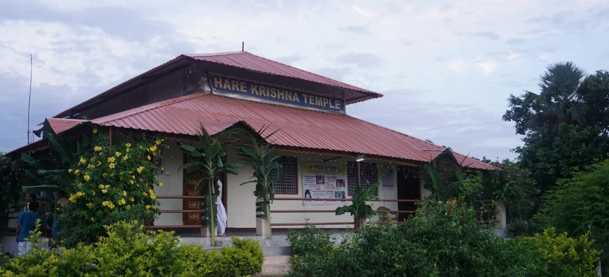
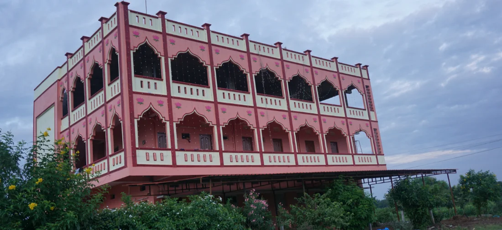

Amidst the serenity of lush green farm fields touching the horizons, all directions rich with flourishing vegetation, refreshing breeze brushing through the crops all through the day, well-secluded from the noisy clutter and rumble of the cities, we welcome you to the home of Sri Sri Radha Giridhari, Sri Sri Jagannath, Baladev, Subhadra & Sri Sri Nitai Gaura Sundar.
Hare Krishna Mandiram
In such delightful environment the divine Lord Giridhari and his consort Srimati Radha Rani are residing to bless to all of us.
Spread at about 4.5 acres, this “Farm Project” – Hare Krishna Mandiram is a humble offering to His Divine Grace Srila A.C. Bhaktivedanta Swami Prabhupada, Founder Acarya- International Society for Krishna Consciousness (ISKCON), who paid great emphasis on the development of such self-sustaining farm communities where devotees could lead a simple God-centred life.
“..Our farm projects are an extremely important part of our movement. We must become self-sufficient by growing our own grains and producing our own milk, and then there will be no question of poverty. So develop these farm communities as far as possible. They should be developed as an ideal society depending on natural products not industry…”
His Divine Grace A. C. Bhaktivedanta Swami Prabhupada, Founder– Acharya of the International Society for KrishnaConsciousness Quoted from a Letter to Rupanuga- Bombay 18 December 1974
The Farm is being developed with a vision to propagate the Vedic Life of simple living and high-thinking to establish the ideals of the Varnasrama dharma as being followed throughout the glorious Brahma-Madhva-Gaudiya Sampradaya to assist the mission of Lord Sri Caitanya Mahaprabhu, (The Supreme Personality of Godhead, Lord Krsña Himself), who incarnated five hundred years ago in Navadvipa, West Bengal to demonstrate the practice of loving devotional service (prema-bhakti) and distribute the fruit of ‘love of Godhead’ to all the living entities through the chanting of the holy names of the Lord-
Krishna Krishna Hare Hare
Hare Rama Hare Rama
Rama Rama Hare Hare
The Farm also contributes towards the social, cultural, educational and spiritual uplift of the general populace, without discrimination, through its activities focused around spiritualising the day-to-day life by imparting education, through various events, forums etc., in the application of the principles of a God-centred Vedic Life as revealed in the holy scriptures specifically -Bhagavad-Gita and Srimad-Bhagavatam.
Guest House
A newly built guest house with individual rooms and dormitory for both matajis and prabhujis is available for stay and spend peaceful time with their lordships Radha Giridhari.
